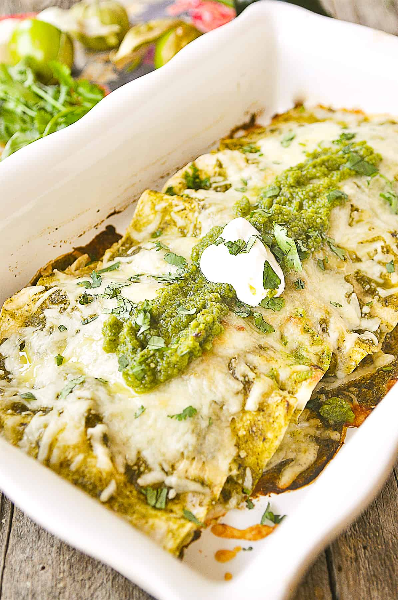

Chicken Enchiladas with Salsa Verde

Description
A timeless classic from south of the border,
enchiladas are a staple in the Mexican culture and
are also super easy to make! These delicious rolled
tortillas are filled up with your choice of meat, but for
the purpose of this recipe, we will be using chicken. Who
doesn't love chicken? The real punch and flavor comes from
the salsa verde though. A delightful spicy flavor that
leaves you with a good burn on your tongue but not so strong
that you're left chugging milk. Here's a short list of the
ingredients you'll need!
Ingredients
- rotisserie chicken
- corn tortillas
- your choice of cooking oil
- 2lbs of tomatillos
- approximately 8 serrano peppers
- block of queso blanco
- crema or sour cream. Your choice!
- shredded lettuce
- chicken bouillon
- garlic powder
- OPTIONAL: avocado. We'll slice this at the end for a nice topping
on top of the lettuce, crema/sour cream, & cheese, but if you don't
like avocados, then you can simply ignore this item.
Now that we got the ingredients out of the way, we can now start
the process of making our delicious enchiladas!
Cooking Instructions
- First thing first, we'll start by making the sauce. For this you'll simply
need a larg pot, the tomatillos, and the serrano peppers.
- We'll start by removing the husks from the tomatillos.
- Now we're going to "test" our serrano peppers. What I like to do
is cut the stem off from the serrano pepper, then cut a small
"slice" of it to lick & taste. If you feel your tongue burn,
that's a good one! Serranos tend to be hit or miss in my experience,
hence why I test them. You only want about 3 hot peppers, so once
you get 3 you like, you don't need to use the rest. You can use more
or less peppers depending on how hot you actually want the sauce to be.
Discard the small "test slices".
- Take a large sized pot and fill it up about two thirds with
water and bring to a boil. Once the water starts boiling,
throw in your tomatillos and serrano peppers. We'll let them sit in
there until they start browning. This process should take about 5-8
minutes.
- While we have the tomatillos and serrano peppers boiling, start shredding
pulling off all the chicken from the bones. We'll end up with shredded
chicken this way. Feel free to cook your own chicken breast or thighs
ahead of time as well, whatever you prefer. I simply use a rotisserie
chicken for the ease of it and one will be enough to feed a family of 4.
- After shredding the chicken, check the tomatillos and serrano peppers on
the stovetop. They should be done at this point. If so, strain and pour
the tomatillos and peppers into a blender. Add about a cup of water. If
you want a more watery sauce, feel free to add even more water.
- Sprinkle in some chicken bouillon (about one and a half tablespoons) and
some garlic powder (about two tablespoons). Blend until liquified.
- Once sauce has been finished, we can start on frying some tortillas. Take
a large pan and pour in some oil. You'll want a fair amount in the pan to
fry the tortillas enough. Fry until they're slightly fried.
You don't want them super hard, otherwise they'll break when you try rolling
them with chicken.
- Once you got your tortillas nice and lightly fried, place some chicken on them
and roll them tightly like little taquitos.
- After laying some out, it's time for the toppings! First pour on your desired
amount of salsa verde.
- Next is the sour cream or crema, whichever you got! Pour your desired amount on
top.
- Final steps is just throw on some shredded lettuce and some queso blanco! It's
soft enough where you can easy crush it with your fingers, but if you'd prefer to
shred all of it first, that's fine too.
- If you have some avocados, then you can also add some slices on top of everything.
Then you're done. Enjoy!